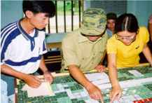
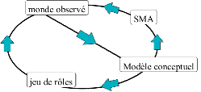

|
Usage des SMA pour
les jeux de rôles

Certains modèles développés à l'aide de Cormas ou de
SMA sont utilisés comme jeux de rôles. Le passage du
modèle au jeu de rôles est rendu possible par un
certaine analogie entre les agents du modèle et les
acteurs du jeu, entre les règles du modèle et les rôles
du jeu, entre la simulation et la session de jeu.
Les travaux entrepris sur ce sujet ont en commun de
proposer un passage dans les deux sens entre le modèle
et le jeu. Les deux outils se complètent et
s'enrichissent mutuellement. Lorsque les acteurs
intervenant dans la gestion d'un espace ou d'une
ressource jouent au jeu de rôles ou manipulent le
modèle, ils apportent des modifications au modèle.
Pour bâtir les modèles, les démarches comprennent
généralement un diagnostic, une formalisation et une
validation. Ensuite, les modèles sont utilisés en tant
que système multi-agent ou en tant que jeu de rôles,
pour la formation ou la négociation. A l'issue de la
première utilisation, les modèles sont modifiés en
fonction du comportement des acteurs réels face au jeu
(voir figure suivante).

Usage de jeux de rôles : la démarche
Les modèles développés sont les suivants :
[AtollGame] : Jeu de rôles
pour mettre en lumière la complexité du problème des
réserves d'eau potable sur l'atoll de Tarawa dans le
Pacifique Sud (Rép. de Kiribati), dans le but de générer
des propositions collectives pour une amélioration de la
gestion des eaux souterraines (A. Dray, P.
Perez, P. d'Aquino).
[ButorStar] : Jeu de rôles
pour sensibiliser les étudiants à la conservation de
l'avifaune et à l'usage rationnel et raisonné des
roselières, mais également destiné à fournir le support
d'une réflexion collective aux usagers pour une gestion
durable de leur roselière (R.
Mathevet , C. Le Page, M. Etienne, G. Lefebvre,
S. Proréol, B. Poulin, G. Gigot, A. Mauchamp).
[Cienaga] : Quantité et
qualité de l'eau du barrage Cienaga, Jujuy, Argentine (version
en Espagnol. Grégoire
Leclerc et Pierre Bommel).
[ContaMiCuenca] : le jeu
de gestion de l'eau dans le Guanacaste, Costa Rica (version
en Espagnol. Grégoire
Leclerc et Pierre Bommel).
[Dukunu Molê] : Un
simulateur hybride pour la planification participative
du paysage à São Tomé (Anne Dray,
Christophe Le
Page et Pierre
Bommel).
[MaeSalaep] : Jeu de rôles
sur l'interaction entre la diversification des cultures
sur pentes et le risque d'érosion des terres dans un
petit bassin versant montagnard du Nord de la Thaïlande (G. Trébuil,
B. Shinawatra-Ekasingh, F. Bousquet, C. Thong-Ngam).
[MejanJeu] : Jeu de rôles à propos de
l'embroussaillement du Causse Méjan par les pins (M. Etienne,
C. Le Page).
[Njoobari] : Organisation et
coordination sur des périmètres irrigués au Sénégal (O.
Barreteau, F. Bousquet et W. Daré).
[Pat] : Jeu de rôles créé
spécifiquement pour une commune de la province
montagnarde de Bac Kan (nord Vietnam) afin d'alimenter
une recherche sur l'évolution des règles d'accès aux
ressources lorsque celles-ci sont soumises à une
pression croissante (S.
Boissau, F. Sempé).
[ReHab] : Re(source)Hab(itat),
jeu de rôle assisté par ordinateur (Christophe Le Page).
[Samba] : Occupation de l'espace dans le Nord VietNam (S. Boissau, J.-C.
Castella).
[SelfCormas] :
Organisation décentralisée� de l'utilisation des sols au
Sénégal (P. d'Aquino,
A. Bah, F. Bousquet, C. Le Page).
[Stratagènes] : Jeu de rôles
à propos de la négociation patrimoniale pour la gestion
in situ des ressources phytogénétiques à
Madagascar (S.
Aubert, C. Le Page).
[SugarRice] : Au nord-est
de la Thaïlande les paysans remplacent le riz par la
canne à sucre dans leurs rizières hautes. Quels sont les
causes et les effets de ce changement d'usage des terres
? Le jeu de rôles est utilisé pour explorer des
scénarios futurs avec les villageois (N. Suphanchaimart, F. Bousquet, I.
Patamadit, C. Wongsamun, G. Trébuil).
[Sylvopast] : Jeu de rôles,
sous Excel (© Microsoft), à propos du sylvopastoralisme
et de la prévention des incendies en région
méditerranéenne (M. Etienne).
[VarzeaViva]
: Conditions de vie des communautés locales dans une
plaine d'inondation de l'Amazone face aux changements
globaux (Marie-Paule
Bonnet et Pierre Bommel).
|